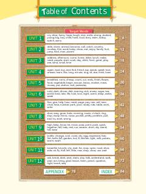

1BIngliz tilini boshlang'ich bosqichda o'rganuvchilar uchun asosiy so'zlar to'plami va mashqlar.
Ushbu kitob ingliz tilini o'rganuvchilar uchun eng ko'p ishlatiladigan so'zlarni tizimli ravishda o'rgatishga mo'ljallangan. Har bir bo'limda yangi so'zlar ro'yxati, ularning ta'riflari, misollar va mustahkamlash uchun turli xil mashqlar keltirilgan.